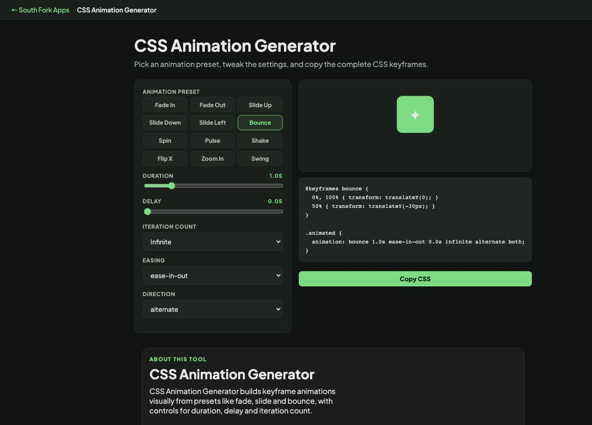

CSS Animation Generator
Pick an animation preset, tweak the settings, and copy the complete CSS keyframes.
✦
About this tool
CSS Animation Generator
CSS Animation Generator builds keyframe animations visually from presets like fade, slide and bounce, with controls for duration, delay and iteration count.
How to use it
- Choose an animation preset.
- Set the duration, delay and how many times it repeats.
- Copy the generated keyframes and animation property.
What makes an animation feel right
Two things matter more than the effect itself: duration and easing. Interface animations generally want 150 to 300 milliseconds. Much faster reads as a jump, much slower makes the interface feel sluggish because the user is waiting on you.
Easing conveys physical plausibility. Linear motion looks mechanical because nothing in the real world starts and stops instantly. Ease-out, which starts fast and settles, suits things entering the screen and is the safest default.
When it helps
- Adding entrance animations without hand-writing keyframes.
- Building a loading or attention animation.
- Prototyping a motion idea before implementing it properly.
- Learning keyframe syntax by reading generated output.
Common mistakes
- Ignoring prefers-reduced-motion. Some users get genuinely unwell from motion, and honouring that media query is a real accessibility requirement, not a nicety.
- Animating layout properties like width, height or top. Animating transform and opacity instead keeps the work on the compositor and stays smooth.
- Setting infinite iterations on anything decorative, which is distracting and burns battery.
